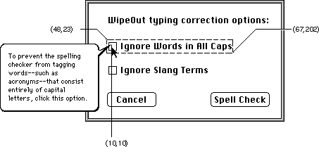
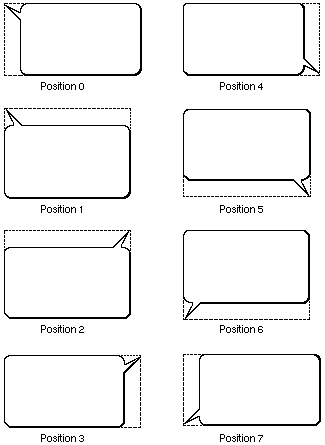
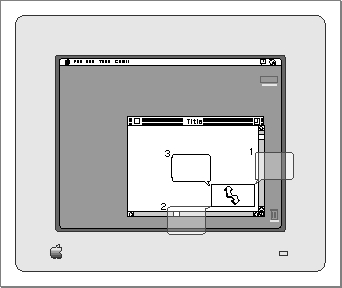

Legacy Document
Important: The information in this document is obsolete and should not be used for new development.
Important: The information in this document is obsolete and should not be used for new development.


How the Help Manager Displays Balloons
The Help Manager performs most of the work involved with rendering help balloons for your application. This section gives an overview of the facilities that the Help Manager uses to display help balloons.The Help Manager uses the Window Manager to create a special type of window for the help balloon and then draws the help message in the port rectangle of the window. The Help Manager is responsible for
A balloon definition function, which is an implementation of a window definition function, defines the general appearance of the help balloon. A standard balloon definition function is provided for you, and it is responsible for
- calculating the size of the help balloon (based on the help message you provide)
- determining line breaks for text in a help balloon
- calculating a position for the help balloon so that it appears onscreen
- drawing the help balloon and your help message onscreen
For help balloons, the content region is the area inside the balloon frame; it contains the help message. The structure region is the boundary region of the entire balloon, including the content area and the pointer that extends from one of the help balloon's corners.
- calculating the help balloon's content region and structure region, which are based on the rectangle calculated by the Help Manager
- drawing the frame of the help balloon
The standard balloon definition function is the window definition function (a
'WDEF'resource) with resource ID 126. Figure 3-2 shows the general shape of a help balloon drawn with this standard balloon definition function.Figure 3-2 A help balloon drawn with the standard balloon definition function
Every help balloon is further defined by its hot rectangle, its tip, and a variation code.
Figure 3-3 The tip and hot rectangle for a help balloon
 The hot rectangle encloses the area for which you want to provide Balloon Help online assistance. When the user moves the cursor over a hot rectangle, the Help Manager displays the rectangle's help balloon; the Help Manager removes the help balloon when the user moves the cursor away from the hot rectangle. To prevent balloons from flashing excessively, the Help Manager does not display a balloon unless the user leaves the cursor at the same location for a short time (around one-tenth of a second). This length of time is set by the system software and cannot be changed.
In Figure 3-3, the help balloon is displayed for a hot rectangle defined by coordinates (48,23,67,202), which are local to the window. The Help Manager displays and removes the help balloon as the cursor moves in and out of the area defined by the hot rectangle.
A small pointer extends from a corner of every help balloon, indicating the object or area that is explained in the help balloon. The tip is the point at the end of this extension. Figure 3-3 shows an example of a help balloon for a control. The balloon tip is at the coordinates (10,10), which are local to the hot rectangle.
A variation code specifies the preferred position of the help balloon relative to the hot rectangle. The balloon definition function draws the frame of the help balloon based on that variation code.
As shown in Figure 3-4, the standard balloon definition function provides eight different positions, which you can specify with a variation code from 0 to 7. The figure also shows the boundary rectangle for each shape. Note that the tip of the help balloon always aligns with an edge of the boundary rectangle. If you write your own balloon definition function, you should support the tip locations defined by the standard variation codes.
Figure 3-4 Standard balloon positions and their variation codes
 For most of the help balloons it displays, the Finder uses variation code 6. A balloon with variation code 6 has its tip in the lower-left corner and projects up slightly and to the right.
If a help balloon is on the screen and not in the menu bar, the Help Manager uses the specified variation code to display the help balloon. If a help balloon is offscreen or in the menu bar, the Help Manager attempts to display the help balloon by using different variation codes and by moving the tip. Usually, the Help Manager moves the tip by transposing it across the horizontal and vertical planes of the hot rectangle.
Figure 3-5 shows the Help Manager making three attempts to fit a help balloon onscreen by moving the tip to three different sides of the hot rectangle and using an appropriate variation code for each tip.
Figure 3-5 Alternate positions of a help balloon
 When positioning a help balloon onscreen, the Help Manager first determines whether the screen has enough horizontal space and then enough vertical space to display the balloon using the specified variation code and tip. If the help balloon is either too wide or too long to fit onscreen at this position, the Help Manager tries a combination of different variation codes and transpositions around the hot rectangle. In Figure 3-5, the Help Manager uses a new variation code, moves the tip to a different side of the hot rectangle, and again tests whether the help balloon fits onscreen. If, after exhausting all possible positions, the Help Manager still cannot fit the entire help balloon onscreen, the Help Manager displays a help balloon at the position that best fits onscreen and clips the help message to fit the balloon at this position.
When you use dialog-item help (
'hdlg') resources or theHMShowBalloonandHMShowMenuBalloonfunctions, the Help Manager allows you to specify alternate rectangles, which give you additional flexibility in positioning your help balloons onscreen. The Help Manager uses the alternate rectangle instead of the hot rectangle for transposing help balloons to make them fit onscreen. If you make your alternate rectangle smaller than your hot rectangle, for example, you have greater assurance that the Help Manager will be able to fit the help balloon onscreen; if you specify an alternate rectangle that is larger than your hot rectangle, you have greater assurance that the help balloon will not obscure some object explained by the balloon.To provide help balloons under most circumstances, you create help resources, which specify the help messages, the balloon definition functions, the variation codes, and, when necessary, the tips and the hot rectangles or alternate rectangles for the Help Manager to use in drawing help balloons. These help resources are
To put help balloons in your application, you have a number of responsibilities:
- the menu help (
'hmnu') resource, which provides help balloons for menus and menu items- the dialog-item help (
'hdlg') resource, which provides help balloons for items in dialog boxes and alert boxes- the rectangle help (
'hrct') resource, which associates a help balloon with a hot rectangle in a static window- the window help (
'hwin') resource, which associates an'hrct'or'hdlg'resource with a hot rectangle in a window or with an item in a dialog box or alert box- the Finder icon help (
'hfdr') resource, which provides a custom help balloon message for your application icon- the default help override (
'hovr') resource, which overrides the help messages of default help balloons provided in system software
For objects other than menu items, you have these additional responsibilities:
- You must create any necessary help resources for your application.
- You must provide the help messages that appear in the balloons. Although you can store these messages in the help resources themselves or in data structures, localizing your help messages is much easier if you store them in other resources--such as
'PICT','STR#','STR ','TEXT', and'styl'resources--that are easier to edit.- In your help resources you must specify a balloon definition function for your help balloons. Typically, you should use the standard balloon definition function that draws shapes similar to that shown in Figure 3-2 on page 3-8. This helps maintain a consistent look across all help balloons used by the Finder and other applications. However, if you feel absolutely compelled to change the shape of help balloons in your application, you can write your own balloon definition function as described in "Writing Your Own Balloon Definition Function" on page 3-86. Be aware, however, that a different help balloon shape may initially confuse your users.
- In your help resources you must specify a variation code. The variation code positions your balloons onscreen according to the general shape described by their balloon definition function. If you use the standard balloon definition function, you'll use variation codes 0 to 7 to display the help balloons shown in Figure 3-4 on page 3-9. The preferred variation code is 0. If you are unsure of which variation code to use, specify 0; the Help Manager will use a different variant if another is more appropriate. If you write your own balloon definition function, you must define your own variation codes.
In summary, the Help Manager automatically displays help balloons in the following manner. The user turns Balloon Help assistance on, then moves the cursor to an area described by a hot rectangle. The Help Manager calculates the size of the help balloon based on its help message. The Help Manager uses TextEdit to determine word breaks and line breaks of text in the help balloon. The Help Manager then determines the size of the help balloon and uses the Window Manager to create a new help balloon. The Window Manager calls the balloon definition function to determine the help balloon's general shape and position. (If the variation code places the help balloon offscreen or in the menu bar, the Help Manager tries a different variation code or moves the tip of the help balloon to another side of the hot rectangle or the alternate rectangle.) The window definition function draws the frame for the help balloon, and the Help Manager draws the help message of the help balloon.
- In your help resources you must specify coordinates for the balloon's tip. For menu items, the Help Manager automatically places the tip just inside the right edge of the menu item.
- You must specify rectangles in your help resources. (The hot rectangles for items in menus, alert boxes, and dialog boxes are automatically defined for you by their display rectangles.) For
'hdlg'resources, you specify alternate rectangles for moving the help balloon. For'hrct'resources, you specify hot rectangles, which define the areas onscreen for association with help balloons.- You must track the cursor in dynamic windows, and, when the cursor moves over a hot rectangle in your window, you must call Help Manager routines (such as
HMShowBalloon) to display your help balloons. You can let your application or the Help Manager remove the help balloon when the user moves the cursor out of the hot rectangle.
For most interface features that you want to provide help for, you create the help message (preferably in a separate, easily edited resource) and, in the help resources themselves, you specify the standard balloon definition function, one of the eight variation codes, the tip's coordinates, and (often) a hot rectangle.
The Help Manager does not automatically display help balloons for dynamic
windows or for menus using custom menu definition procedures. If you want to provide help balloons for either of these types of objects, or if you want more control over help balloons, you must identify hot rectangles, create your own data structures to store their locations, track the cursor yourself, and callHMShowBalloonwhen the cursor moves to your hot rectangles. If you wish, you can also write your own balloon definition function and tip function.